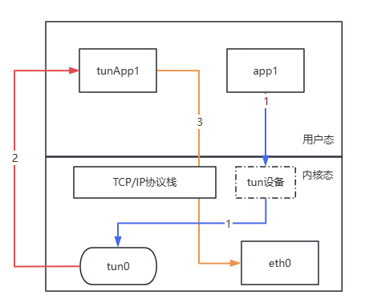
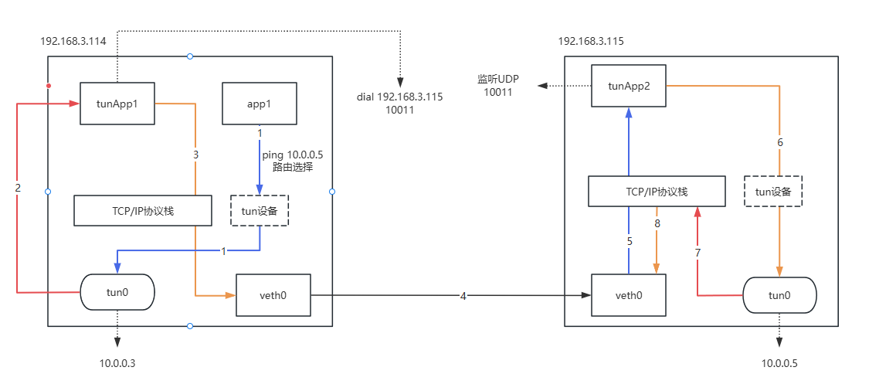

linux tun 虚拟设备的简单探寻
本篇文章将简单介绍tun虚拟设备的简单探寻。
什么是tun虚拟设备
在Linux中，谈到 tun 时，通常会将其与 tun/tap 一起讨论。这两者都是Linux的虚拟网络设备，但 tun 是一种点对点（PPP）设备，与 tap 的工作模式略有不同。本文将重点介绍tun虚拟设备。
tun 虚拟设备可以简单理解为一块运行在L3层（网络层）的虚拟网卡。它的一端连接到内核的网络协议栈，另一端则连接到用户态程序。在实际使用过程中，网络协议栈生成的网络包可以通过 tun 设备发送到用户态进程，由该进程进行处理，例如加密、数据压缩等操作。处理完成后，数据可以再通过网络协议栈发送出去。其工作流程可以简单用下图表示：

tun 设备可以看作是Linux下的一个特殊文件，同时也是一块“虚拟网卡”。它具有独立的IP地址，并通过路由规则将 app1 发送的请求定向到 tun0。tun0 的另一端则连接到应用层程序 tunApp1。该程序可以接收来自网络层的报文，进行加密、压缩或应用层封装等操作，然后通过 tunApp1 将处理后的数据再次通过应用层调用网络协议栈再发送出去。
因此，可以说 tun 实现了对网络层数据包的劫持。这些数据包会被发送到与 tun 相连的应用层程序进行处理，例如加密、压缩或其他自定义操作。处理完成后，数据包再通过网络协议栈发送出去，完成整个流程。
tun基本操作
在使用tun虚拟设备之前，需要先设置IP转发。
root@3114:~# sysctl -w net.ipv4.ip_forward=1
net.ipv4.ip_forward = 1
root@3114:~#
可以使用 ip 命令来创建 tun 虚拟网卡。例如，创建一个名为 tun0 的 tun 虚拟设备，命令如下：
root@3114:~# ip tuntap add dev tun0 mode tun
要查看已经创建好的 tun 设备，可以使用以下命令：
root@3114:~# ip link show tun0
3: tun0: <POINTOPOINT,MULTICAST,NOARP> mtu 1500 qdisc noop state DOWN mode DEFAULT group default qlen 500
link/none
root@3114:~#
root@3114:~# ip addr show tun0
3: tun0: <POINTOPOINT,MULTICAST,NOARP> mtu 1500 qdisc noop state DOWN group default qlen 500
link/none
root@3114:~#
可以使用以下命令为 tun 虚拟设备分配ip地址，例如为设备 tun0 分配 10.0.0.3/24：
root@3114:~# ip addr add 10.0.0.3/24 dev tun0
root@3114:~#
再次查看，就有了其ip地址。
root@3114:~# ip addr show dev tun0
3: tun0: <POINTOPOINT,MULTICAST,NOARP> mtu 1500 qdisc noop state DOWN group default qlen 500
link/none
inet 10.0.0.3/24 scope global tun0
valid_lft forever preferred_lft forever
root@3114:~#
该虚拟网卡，默认为关闭状态，可以将该虚拟网卡开启。
root@3114:~# ip link set tun0 up
root@3114:~#
当虚拟网卡tun0创建完毕后，系统会默认为其创建一条路由，可以使用ip route查看。
root@3114:~# ip route
default via 192.168.3.1 dev eth0 proto dhcp src 192.168.3.114 metric 100
1.2.4.8 via 192.168.3.1 dev eth0 proto dhcp src 192.168.3.114 metric 100
10.0.0.0/24 dev tun0 proto kernel scope link src 10.0.0.3 linkdown
114.114.114.114 via 192.168.3.1 dev eth0 proto dhcp src 192.168.3.114 metric 100
192.168.3.0/24 dev eth0 proto kernel scope link src 192.168.3.114 metric 100
192.168.3.1 dev eth0 proto dhcp scope link src 192.168.3.114 metric 100
root@3114:~#
可以看到，设备的状态为 linkdown，实际上这是因为 tunApp 尚未启动。当 tunApp 没有启动时，tun 设备的句柄无法被打开，因此路由中才会显示为 linkdown 状态。
实际体验使用tun传输数据
在进行具体操作之前，我们已经将图给画好了，如下：

我们将 3.115 的机器称为服务端，3.114 的机器称为客户端。这两台机器上分别有一个 tun 虚拟设备，并且各自运行着 tunApp 程序。实现的功能是，在 3.114 上执行 ping 10.0.0.5 操作，通过 tun 设备让请求在 3.115 上执行，并将结果返回给 3.114。
服务器操作
首先，需要在3.115上操作创建tun虚拟设备，并且分为地址。
root@3115:~# ip tuntap add name tun0 mode tun
root@3115:~#
root@3115:~# ip link show tun0
4: tun0: <POINTOPOINT,MULTICAST,NOARP> mtu 1500 qdisc noop state DOWN mode DEFAULT group default qlen 500
link/none
root@3115:~#
root@3115:~# ip addr add 10.0.0.5/24 dev tun0
root@3115:~#
root@3115:~# ip link set tun0 up
root@3115:~#
root@3115:~# sysctl -w net.ipv4.ip_forward=1
net.ipv4.ip_forward = 1
root@3115:~#
root@3115:~# ip addr show tun0
4: tun0: <NO-CARRIER,POINTOPOINT,MULTICAST,NOARP,UP> mtu 1500 qdisc fq_codel state DOWN group default qlen 500
link/none
inet 10.0.0.5/24 scope global tun0
valid_lft forever preferred_lft forever
root@3115:~#
我们需要为此编写一个tunapp2，并且监听udp的10010端口，代码如下：
package main
import (
"fmt"
"log"
"net"
"os"
"syscall"
"time"
"unsafe"
)
func main() {
fmt.Println("start server")
tun, err := os.OpenFile("/dev/net/tun", os.O_RDWR, 0)
if err != nil {
log.Println("open tun devices error", err)
}
var ifr [18]byte
copy(ifr[:], "tun0")
*(*uint16)(unsafe.Pointer(&ifr[16])) = uint16(syscall.IFF_TUN) | uint16(syscall.IFF_NO_PI)
syscall.Syscall(syscall.SYS_IOCTL, tun.Fd(), uintptr(syscall.TUNSETIFF), uintptr(unsafe.Pointer(&ifr)))
serverAddr, err := net.ResolveUDPAddr("udp", ":10010")
if err != nil {
log.Println("failed resolve udp addr", err)
return
}
conn, err := net.ListenUDP("udp", serverAddr)
if err != nil {
log.Println("listen udp error", err)
return
}
buf := make([]byte, 1500)
for {
un, udpAddr, err := conn.ReadFromUDP(buf)
if err != nil {
log.Println("read from udp error", err)
continue
}
fmt.Println("已经收到客户端udp请求了", len(buf[:un]))
tun.SetReadDeadline(time.Now().Add(1 * time.Second))
_, err = tun.Write(buf[:un])
if err != nil {
log.Println("tun write error", err)
}
fmt.Println("已经将请求写入到了tun虚拟设备中", len(buf[:un]))
n, err := tun.Read(buf)
if err != nil {
if os.IsTimeout(err) {
continue
}
log.Fatalf("Failed to read from device: %v", err)
}
fmt.Println("已经收到tun收到了信息", len(buf[:n]))
conn.WriteToUDP(buf[:n], udpAddr)
fmt.Println("将数据回复到udp客户端中", len(buf[:n]))
}
}
在运行 tunApp2 后，可以使用以下命令查看 tun0 的状态：
root@3115:~# ./server
start server
查看tun0状态。
root@3115:~# ip addr show tun0
4: tun0: <POINTOPOINT,MULTICAST,NOARP,UP,LOWER_UP> mtu 1500 qdisc fq_codel state UP group default qlen 500
link/none
inet 10.0.0.5/24 scope global tun0
valid_lft forever preferred_lft forever
inet6 fe80::f4d3:cccd:e9e2:3be6/64 scope link stable-privacy
valid_lft forever preferred_lft forever
root@3115:~#
可以看到，当客户端连接并启动时，tun 虚拟设备的状态会从 DOWN 变为 UP。这表明设备已成功启用，并且可以开始接收和发送网络数据。此时，用户态程序tunApp2也与设备建立了连接。
客户端操作
同样的，也需要在客户端上创建tun虚拟设备，配置IP信息等，具体命令如下：
root@3114:~# ip tuntap add name tun0 mode tun
root@3114:~# ip addr add 10.0.0.3/24 dev tun0
root@3114:~# ip link set tun0 up
root@3114:~# sysctl -w net.ipv4.ip_forward=1
net.ipv4.ip_forward = 1
root@3114:~# ip addr show tun0
3: tun0: <NO-CARRIER,POINTOPOINT,MULTICAST,NOARP,UP> mtu 1500 qdisc fq_codel state DOWN group default qlen 500
link/none
inet 10.0.0.3/24 scope global tun0
valid_lft forever preferred_lft forever
root@3114:~#
root@3114:~#
并且，为此编写一个tunApp1程序，将作为客户端使用，代码如下：
package main
import (
"fmt"
"log"
"net"
"os"
"syscall"
"unsafe"
)
func main() {
fmt.Println("client start...")
tun, err := os.OpenFile("/dev/net/tun", os.O_RDWR, 0)
if err != nil {
log.Println("open tun devices error", err)
}
var ifr [18]byte
copy(ifr[:], "tun0")
*(*uint16)(unsafe.Pointer(&ifr[16])) = uint16(syscall.IFF_TUN) | uint16(syscall.IFF_NO_PI)
syscall.Syscall(syscall.SYS_IOCTL, tun.Fd(), uintptr(syscall.TUNSETIFF), uintptr(unsafe.Pointer(&ifr)))
serverAddr, err := net.ResolveUDPAddr("udp", "192.168.3.115:10010")
if err != nil {
log.Println("resolve udp error", err)
return
}
conn, err := net.DialUDP("udp", nil, serverAddr)
if err != nil {
log.Println("dial udp error", err)
return
}
go func() {
buf := make([]byte, 1500)
for {
tn, err := tun.Read(buf)
if err != nil {
log.Fatalf("Failed to read from device: %v", err)
}
fmt.Println("从tun虚拟设备中收到了请求", len(buf[:tn]))
_, err = conn.Write(buf[:tn])
if err != nil {
log.Println("conn write error", err)
continue
}
fmt.Println("将请求发送到udp服务器中", len(buf[:tn]))
}
}()
buf := make([]byte, 1500)
for {
cn, _, err := conn.ReadFromUDP(buf)
if err != nil {
log.Println("read from udp error", err)
continue
}
fmt.Println("已经从udp服务器中获取到数据")
_, err = tun.Write(buf[:cn])
if err != nil {
log.Println("tn write error", err)
}
fmt.Println("将数据写入到tun设备中")
}
}
尝试ping
首先，在没有启动 tunApp 的情况下，客户端尝试 ping 10.0.0.5 时，当然是无法成功的。这是因为 tun 设备的句柄没有被打开，无法处理从客户端发送的请求，导致数据包无法传输。具体表现为无法接收到响应。
root@3114:~# ping 10.0.0.5 -c 2
PING 10.0.0.5 (10.0.0.5) 56(84) bytes of data.
--- 10.0.0.5 ping statistics ---
2 packets transmitted, 0 received, 100% packet loss, time 1015ms
root@3114:~#
当启动 tunApp 后，客户端再次执行 ping 10.0.0.5 时，根据系统预设的路由规则，流量将会通过 tun0 设备发送出去。例如，客户端的路由如下所示：
root@3114:~# ip route
default via 192.168.3.1 dev eth0 proto dhcp src 192.168.3.114 metric 100
1.2.4.8 via 192.168.3.1 dev eth0 proto dhcp src 192.168.3.114 metric 100
10.0.0.0/24 dev tun0 proto kernel scope link src 10.0.0.3
114.114.114.114 via 192.168.3.1 dev eth0 proto dhcp src 192.168.3.114 metric 100
192.168.3.0/24 dev eth0 proto kernel scope link src 192.168.3.114 metric 100
192.168.3.1 dev eth0 proto dhcp scope link src 192.168.3.114 metric 100
root@3114:~#
上面有一条规则是这样的：
10.0.0.0/24 dev tun0 proto kernel scope link src 10.0.0.3
这将表示，当请求 10.0.0.0/24 网络范围内的地址时，流量将被定向到 10.0.0.3 网卡，而该网卡正是我们 tun0 设备的地址。
所以，在客户端机器上直接ping 10.0.0.5地址，会收到回复报文，如下：
root@3114:~# ping 10.0.0.5 -c 2
PING 10.0.0.5 (10.0.0.5) 56(84) bytes of data.
64 bytes from 10.0.0.5: icmp_seq=1 ttl=64 time=2.40 ms
64 bytes from 10.0.0.5: icmp_seq=2 ttl=64 time=1.62 ms
--- 10.0.0.5 ping statistics ---
2 packets transmitted, 2 received, 0% packet loss, time 1002ms
rtt min/avg/max/mdev = 1.622/2.011/2.400/0.389 ms
root@3114:~#
同样的，client日志会显示如下：
root@3114:~# ./client
client start...
从tun虚拟设备中收到了请求 84
将请求发送到udp服务器中 84
已经从udp服务器中获取到数据
将数据写入到tun设备中
从tun虚拟设备中收到了请求 84
将请求发送到udp服务器中 84
已经从udp服务器中获取到数据
将数据写入到tun设备中
对于client的报文内容如下：
root@3114:~# tcpdump -i tun0
tcpdump: verbose output suppressed, use -v[v]... for full protocol decode
listening on tun0, link-type RAW (Raw IP), snapshot length 262144 bytes
07:50:37.061239 IP 3114 > 10.0.0.5: ICMP echo request, id 24, seq 1, length 64
07:50:37.064101 IP 10.0.0.5 > 3114: ICMP echo reply, id 24, seq 1, length 64
07:50:38.062797 IP 3114 > 10.0.0.5: ICMP echo request, id 24, seq 2, length 64
07:50:38.065070 IP 10.0.0.5 > 3114: ICMP echo reply, id 24, seq 2, length 64
^C
4 packets captured
4 packets received by filter
0 packets dropped by kernel
root@3114:~#
server日志会显示如下：
root@3115:~# ./server
start server
已经收到客户端udp请求了 84
已经将请求写入到了tun虚拟设备中 84
已经收到tun收到了信息 84
将数据回复到udp客户端中 84
已经收到客户端udp请求了 84
已经将请求写入到了tun虚拟设备中 84
已经收到tun收到了信息 84
将数据回复到udp客户端中 84
对于server的报文内容如下：
root@3115:~# tcpdump -i tun0
tcpdump: verbose output suppressed, use -v[v]... for full protocol decode
listening on tun0, link-type RAW (Raw IP), snapshot length 262144 bytes
07:50:37.053759 IP 10.0.0.3 > 10.0.0.5: ICMP echo request, id 24, seq 1, length 64
07:50:37.053831 IP 10.0.0.5 > 10.0.0.3: ICMP echo reply, id 24, seq 1, length 64
07:50:38.054582 IP 10.0.0.3 > 10.0.0.5: ICMP echo request, id 24, seq 2, length 64
07:50:38.054651 IP 10.0.0.5 > 10.0.0.3: ICMP echo reply, id 24, seq 2, length 64
^C
4 packets captured
4 packets received by filter
0 packets dropped by kernel
root@3115:~#
总结
对于 tun 虚拟设备，可以将其简单理解为：将 A 产生的报文原封不动地传输到 B 进行处理，待 B 执行完毕后，再将处理结果返回给 A。
linux tun 虚拟设备的简单探寻
https://wangli2025.github.io/2025/01/10/Linux_Tun_Virtual_Devices.html
本站均为原创文章，采用 CC BY-NC-ND 4.0 协议。转载请注明出处，不得用于商业用途。